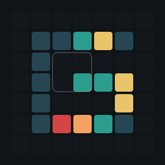

cgm-zig
Build a very large Zig project with a compiler that finishes the job, and says plainly when it runs out of room.
On a project of about 1,800 modules, stock Zig 0.16.0 died silently after more than two hours, every time. With cgm-zig the same full build completes in under 45 minutes.
Status: a toolchain for 64-bit Linux is released, and a newer build is published as a prerelease, to try out before relying on it. Every number on this site comes from the repository’s own record, linked beside it.

The same build, two compilers
Why it exists
Zig’s compiler keeps its work in tables addressed by 32-bit indexes. On a project this large, an empty-slot marker was read as a real index and the compiler died with no message at all. Stock release builds leave out the check that would have named the problem.
cgm-zig keeps that check, so running out of room now stops with a message that names the thread, the index reached and the limit. It also raises the limit it was hitting, from 67,108,863 to 134,217,727 items per partition. The details, with the files and commits, are on What changes.
It changes nothing in the language. Every new behaviour sits behind a new flag, and a stock invocation behaves like stock Zig.
Where to go next
- Build very large projects
What each patch does, what was measured, and what was not.
- Use the compiler
The released builds, how to check and install one, and how to build it yourself.
- Check where it comes from
Who provides it, the credit to Zig, the licence, how to cite it, and its provenance.